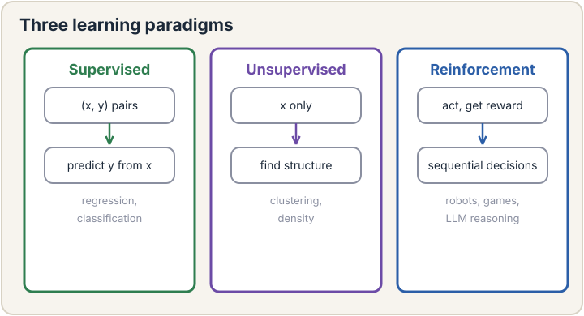
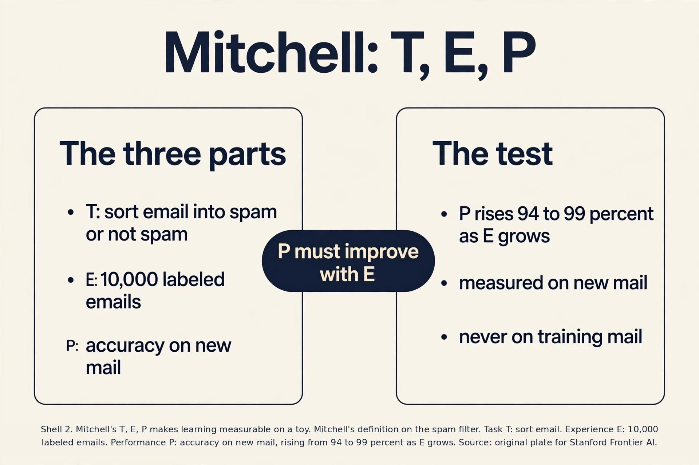
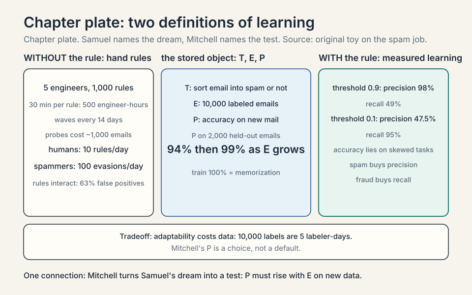
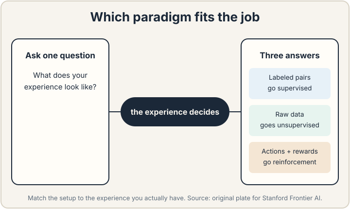
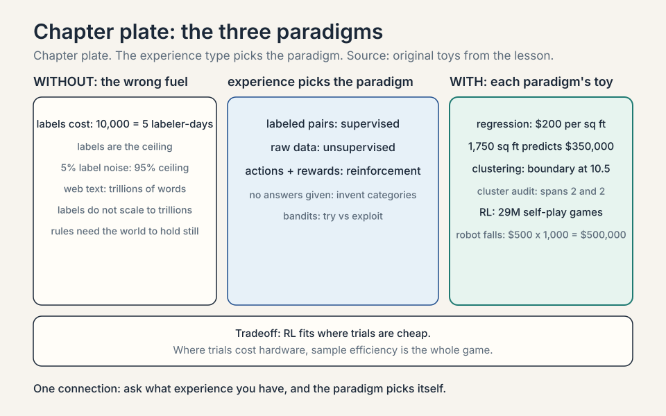
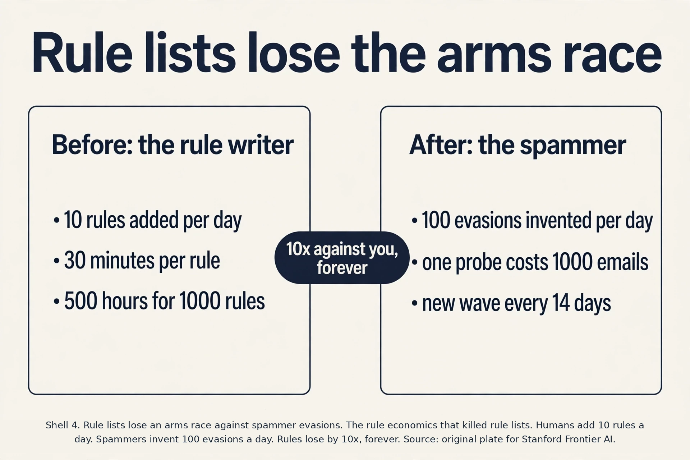
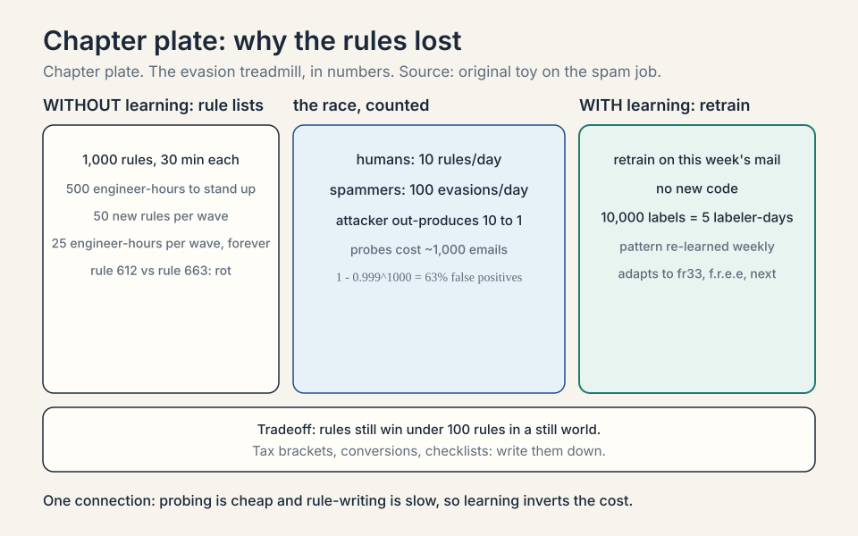
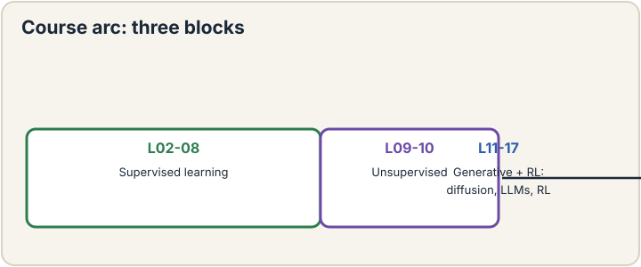
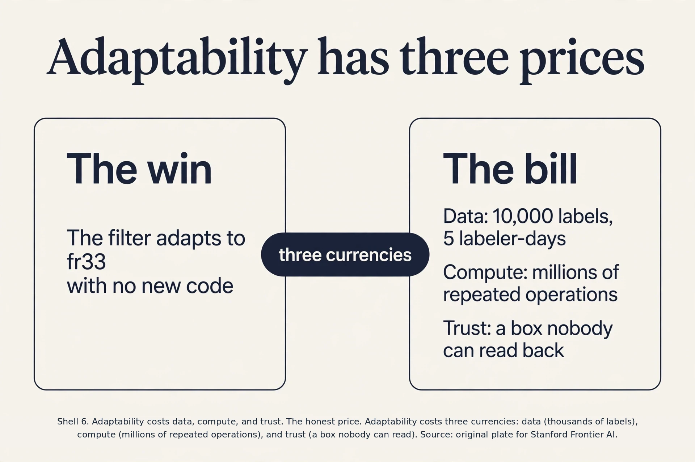
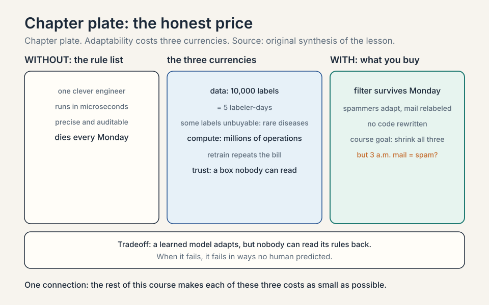

Lecture 1: What Machine Learning Is
Video blocked (ad-blocker or local file mode).
Watch on YouTubeVideo not loading? Watch on YouTube
Original lecture. Tengyu Ma defines machine learning, surveys the three paradigms, and maps the course.
The job: a filter that survives Monday
In 2004, a spam filter at a large email company had a bad Monday. The weekend’s filters worked fine. By Monday noon, inboxes were full of junk. The spammers had changed one word: “free” became “fr33”. Every hand-written rule that matched the word “free” went blind at once.
This is the job machine learning was invented for. A task is work you want a computer to do: sort spam from real mail, price a house, transcribe speech. The old way to do the task is explicit programming: a human writes the rules. “If the subject contains ‘free’ and the sender is unknown, mark as spam.” It works until the world changes, which it does every Monday.
The first attempt at spam filtering was exactly this: rule lists. Build one by hand. Watch it fail. Count the cost. A team of five engineers wrote about 1,000 rules. Each rule took roughly 30 minutes to write, test, and deploy. That is 500 engineer-hours. The rules held for about two weeks. Spammers probe the filter, learn which words it checks, and invent new ones. “Free” becomes “fr33” becomes “f.r.e.e” becomes “complimentary”. Each wave forces a new round of rule writing. The arithmetic is brutal: the humans add rules at 10 per day. The spammers generate evasions at 100 per day. Hand-written rules lose by an order of magnitude, forever.

Here is the key question. What if the machine writes the rules itself, from examples? Nobody writes a rule about “fr33”. Instead, you show the machine 10,000 emails that humans already labeled spam or not spam. The machine finds the patterns on its own. When spammers switch to “f.r.e.e”, you do not rewrite code. You feed the machine this week’s labeled emails and it adjusts. The examples do the teaching. The human never enumerates the rules.
That sentence is the whole field. Machine learning is the study of algorithms that improve at a task from experience instead of from hand-written instructions. Two classic definitions make this precise, and both still hold after decades.
Subchapter: Samuel, 1959, the first definition
Arthur Samuel wrote the first definition in 1959, before the term “software” was common. He said machine learning is “the field of study that gives computers the ability to learn without being explicitly programmed.” The key phrase is “without being explicitly programmed”. Nobody programmed the “fr33” rule. The machine learned it from data.
Samuel built the first famous learning machine: a checkers program that learned to play by playing itself. The program did not contain a rule for every board position. It contained a scoring function with knobs, and the knobs turned as the program won and lost games. In 1962, three years after the paper, the program beat Connecticut checkers champion Robert Nealey. The definition and the demo arrive together: learning means the program’s behavior changes because of experience, not because a human edited the code.
The definition has one soft spot. “Explicitly programmed” draws a line that is hard to see in modern systems. A neural network’s architecture is hand-designed. Its training loop is hand-written code. What is “learned” is the numbers inside, the weights. Samuel’s definition survives because the behavior that matters, the spam decision, comes from the learned numbers, not from a rule a human typed.
Subchapter: Mitchell, 1997, the testable definition
Tom Mitchell wrote the second definition in 1997, and it is sharper because it names the three moving parts. “A computer program is said to learn from experience E with respect to some class of tasks T and performance measure P, if its performance at tasks T, as measured by P, improves with experience E.”
Unpack it with the spam filter. The task T is “sort email into spam and not spam”. The experience E is 10,000 labeled emails. The performance measure P is accuracy: the fraction of emails sorted correctly. Learning happened if accuracy on new mail rises as the machine sees more labeled examples. Mitchell’s definition turns a vague hope into a testable claim. Measure P before and after E. If P went up, the machine learned.
Notice how broad “experience” is. It covers human-labeled data, but also web text, sensor readings, synthetic data a model generates for itself, and the sequence of rewards and punishments in a game. The lecture stresses this breadth because modern models drink from all of these sources at once.
Subchapter: the experience zoo
Five kinds of E, each with its flagship. Human labels: 10,000 spam tags, the classic supervised fuel. Web text: trillions of words scraped from the internet, the fuel of base language models (each next word is its own label). Sensor readings: robot joint angles and camera frames, the fuel of control policies. Synthetic data: a model generating its own training examples, the fuel of self-play. Rewards: win/loss signals from games, the fuel of RL.
The trend the lecture points at: the field moved from the first kind (expensive, human) toward the middle kinds (cheap, abundant). Pre-training drinks web text because labels do not scale to trillions. The interview question this answers: “where does the data come from” has five answers, and the cheapest abundant one wins at scale.
Subchapter: beyond accuracy, precision and recall
Accuracy is one P among many, and on skewed tasks it lies. A fraud filter on 1% fraud: predict “not fraud” always, score 99% accuracy, catch zero fraud. Two better measures. Precision: of the emails flagged spam, how many were spam? 90 flagged, 81 true spam: precision 90%. Recall: of the true spam, how many got flagged? 100 true spam, 81 flagged: recall 81%.
Work the tradeoff. Threshold at 0.9 (flag only sure spam): 50 flagged, 49 true: precision 98%, recall 49%. Threshold at 0.1: 200 flagged, 95 true: precision 47.5%, recall 95%. Lowering the threshold trades precision for recall, always. The decision rule: pick P from the product cost. Spam filters buy precision (missing spam is cheap, hiding real mail is expensive). Fraud and cancer screening buy recall (a missed case is the catastrophe). Mitchell’s P is a choice, not a default.

Three traps hide in Mitchell’s definition, and interviewers love them. First, P must be measured on data the machine has not trained on. Accuracy on the 10,000 training emails can reach 100 percent by memorization. That is not learning. Lecture 6 is entirely about this trap. Second, E must actually cause the improvement. If P rises because the test got easier, nothing learned. Third, the definition says nothing about how the improvement happens. Any method counts: rules, tables, neural networks. The definition tests the outcome, not the mechanism.
Subchapter: the testable experiment, worked
Run Mitchell’s definition as an experiment. T: sort email into spam and not spam. E: labeled emails. P: accuracy on mail the machine has never seen. Split 10,000 labeled emails into 8,000 for training and 2,000 held out for testing. The machine never trains on the 2,000.
Before any E, the machine guesses: 50% on the held-out 2,000, coin flip. Train on the 8,000. Held-out accuracy: 94%. Add 72,000 more labeled emails and retrain. Held-out accuracy: 99%. P rose with E on unseen data, twice. Learning happened, by Mitchell’s test.
Now the trap, demonstrated. Measure P on the 8,000 training emails instead: 100%. A lookup table of the training set scores 100% and learned nothing. The honest experiment has three parts: a held-out set, two training sizes, one comparison. Anything less is a story, not a test.

The three paradigms
Every learning algorithm in this course fits one of three setups. The setups differ in what the experience looks like.
Subchapter: supervised, the labeled pair
Supervised learning is learning from labeled examples. Each experience is a pair: the input and the correct answer. For spam: (“Win fr33 money now!!!”, spam). For house prices: (3 bedrooms, 2 baths, 1,800 sq ft. Sold for $812,000). The machine’s job is to predict the answer for new inputs it has never seen.
Two flavors cover almost all supervised work. Regression predicts a number: the house sells for $812,000. Classification predicts a category: the email is spam. A toy makes the difference concrete. Four houses: 1,000 sq ft sold for $200,000. 1,500 sq ft sold for $300,000. 2,000 sq ft sold for $400,000. The pattern is $200 per square foot, and a 1,750 sq ft house predicts $350,000. That is regression: the answer lives on a number line. Four emails labeled spam or not spam: the answer is a category, and the machine outputs a probability of spam. That is classification.
Supervision is expensive. Every label costs human time. One labeler tags about 2,000 emails per day. Ten thousand labels cost five labeler-days. The labels are also the ceiling: the machine cannot learn a distinction the labels never make. Lectures 2 through 8 build supervised learning from zero.
Subchapter: the label ceiling, worked
The ceiling is literal. Suppose the labels say only spam or not spam. The machine can learn the spam boundary to perfection, and it will never learn the difference between phishing and marketing spam, because no label ever marked it. Add the distinction and you relabel everything: the old 10,000 labels do not transfer.
Label noise sets a second ceiling. Suppose 5% of labels are wrong: tired labelers, ambiguous mail. A perfect model of the true task scores at most about 95% against the noisy labels, because 5% of the answers it is graded on are wrong. The machine cannot beat the label quality. The decision rule: budget for labels the way you budget for compute. Bad labels are not a data problem. They are a ceiling on everything downstream.
Subchapter: unsupervised, structure without answers
Unsupervised learning is learning from unlabeled data. Nobody tells the machine the right answer. The machine finds structure on its own: which items group together, which patterns repeat. Give it one million emails with no labels and it might discover that “pharmacy” emails form one cluster and “invoice” emails form another. The answers are not given, so the machine invents its own categories.
A toy shows what “finds structure” means. Six points on a line: 1, 2, 3, 20, 21, 22. No labels. A clustering algorithm with two groups puts {1, 2, 3} together and {20, 21, 22} together, because points within a group sit close and points across groups sit far. Nobody told it that 10.5 was the boundary. The boundary fell out of the geometry.
Evaluation is the hard part. With no labels, there is no accuracy to measure. You judge unsupervised results by usefulness: do the clusters help a human, do the compressed features keep the signal. Lectures 9 and 10 cover this: clustering with k-means and Gaussian mixtures, then EM and PCA.
Subchapter: the cluster audit, worked
Judge the six-point toy without labels. Points: 1, 2, 3, 20, 21, 22. Candidate A groups {1,2,3} and {20,21,22}. Candidate B groups {1,2} and {3,20,21,22}. Score each by compactness: the largest gap inside a group. Candidate A’s groups span 2 and 2. Candidate B’s second group spans 19, from 3 to 22. Candidate A wins: tight groups, a clean gap at 10.5.
No label said so. The geometry judged. This is the honest version of unsupervised evaluation: internal measures like compactness and separation, plus the downstream test (do the groups help a human task?). The lecture’s warning stands: a beautiful clustering of a useless grouping is still useless.
Subchapter: reinforcement, the score that teaches
Reinforcement learning is learning from trial and error. The machine acts in an environment and gets rewards or punishments back. Nobody shows it the right move. It plays thousands of games, wins some, loses some, and shifts toward the moves that won. The experience is a history of actions and rewards.
A toy makes the loop concrete. A robot stands in a corridor with three doors. It picks door 2 and finds a reward of +10. It picks door 1 and finds -5. After 1,000 tries, door 2 paid +10 most of the time, door 1 paid -5, door 3 paid 0. The machine’s policy shifts toward door 2. No label said “door 2 is correct”. The rewards taught it.
The price of trial and error is the trials. A chess program plays millions of games against itself. A robot breaks hardware learning to walk. Sample efficiency, learning from few trials, is the field’s central pain. Lectures 16 and 17 cover this, with language models as the flagship application.
Subchapter: the price of trials, in numbers
Count the trials. AlphaGo Zero played about 29 million self-play games over 40 days to reach superhuman Go (Nature, 2017). Twenty-nine million games is free when the games are simulated: no board wears out, no opponent bills by the hour. The simulator is the cheat code that makes game RL affordable.
Robots have no cheat code. Each trial is a physical fall. Suppose a walking robot falls 1,000 times while learning, and each fall risks $500 in repairs and downtime. The training bill is $500,000 before the first useful step. This is why robot learning borrows so heavily from simulation and from human demonstrations: the trials are too expensive to spend freely. The decision rule: RL fits where trials are cheap (games, simulators, logged user clicks). Where trials cost money or hardware, sample efficiency is the whole game.
Which setup fits a job? Ask what experience you have. Labeled pairs means supervised. Raw data with no answers means unsupervised. A world you can act in and get scored means reinforcement.


Why the old way broke, in numbers
The rule-list failure deserves one more look, because it explains why the field exists. Suppose you maintain N rules. Spammers test each rule with probes. Each probe costs them about 1,000 emails. A wave of evasion arrives roughly every 14 days. Each wave breaks about 5 percent of your rules and needs about 50 new rules.
Your team writes a rule in 30 minutes. Fifty rules cost 25 engineer-hours per wave, every two weeks, forever. Worse, the rules interact: rule 612 (“mark as spam if sender unknown AND subject has numbers”) starts flagging real receipts after you add rule 663. The false-positive rate climbs with the rule count. You are patching a system whose complexity grows every wave while the attacker pays nothing to probe it.

The learning approach inverts this. The machine retrains on this week’s labeled mail. No new code. The labeling is the only human work, and one labeler tags about 2,000 emails per day. Ten thousand labels cost five labeler-days and produce a filter that adapts to “fr33”, “f.r.e.e”, and whatever comes next, because the pattern is re-learned from fresh examples each time.
Subchapter: the evasion treadmill, worked
Work the rule-list arithmetic to the end. Five engineers, 1,000 rules, 30 minutes per rule: 500 engineer-hours. That is 100 hours per engineer, about 20 working days, just to stand the filter up. Then the treadmill starts. A wave of evasions arrives every 14 days. Each wave needs about 50 new rules: 25 engineer-hours, roughly 3 engineer-days, every two weeks, forever. The build cost is a one-time tax. The maintenance cost is a subscription that never cancels.
Now the race. The team adds rules at 10 per day. Spammers probe with test emails that cost them almost nothing and invent evasions at 100 per day. The attacker out-produces the defender 10 to 1, and every evasion the team has not seen yet sails through. This is not a gap the team closes by working harder. It is structural: probing is cheap, rule-writing is slow.
Rules also rot each other. Suppose each rule misfires on 0.1% of real mail. One rule is fine. With 1,000 independent rules, the chance a real email trips at least one is 1 - 0.999^1000, about 63%. The filter drowns in its own false positives. Every new rule buys a little recall and sells a little precision, and the terms of that trade get worse with every wave.
Subchapter: where rules still win
Learning is not always the answer. Hand-written rules still win when the world does not change and the rules are few. Tax brackets are exact and stable: income over $44,725 pays 22 percent. No learning needed. Unit conversions are exact. Chess move legality is exact. Aircraft checklists are exact.
The decision rule: if the correct behavior can be written down in under 100 rules and the world will not move under them, write the rules. They are precise, auditable, and free to run. If the pattern is too complex to write down (what does a cat look like) or the world adapts against you (spammers, fraudsters), learn it from data. The mistake is using learning where rules would do. The opposite mistake is hand-writing rules for a moving target.

What is used where
Each paradigm runs real production systems today. The mapping is public and stable.
Supervised learning runs the revenue. Search ranking, ad click prediction, fraud scoring, and recommendation feeds are supervised models trained on logged user behavior [uncertain: company internals, not public]. The workhorse for tabular data is gradient-boosted trees: XGBoost and LightGBM win most tabular competitions and production benchmarks on structured data, a public and long-standing result. Linear and logistic models still serve enormous traffic where speed and interpretability matter: ad systems score billions of impressions a day with models simple enough to update in minutes [uncertain: internal serving details, not public]. Deep supervised models own perception: vision and speech systems train supervised on labeled datasets [uncertain: stated as field consensus, not sourced].
Unsupervised learning runs the plumbing. Embeddings from contrastive and self-supervised training power search and recommendation retrieval at every large tech company [uncertain: internal deployment details, not public]. PCA and its cousins compress features before models train. Clustering segments users and detects new fraud patterns without labels [uncertain: stated as common practice, not sourced].
Reinforcement learning runs the frontier. RLHF, reinforcement learning from human feedback, aligns every major chat model (InstructGPT and ChatGPT, OpenAI 2022). Game systems like AlphaZero and OpenAI Five are pure RL. AlphaZero learned tabula rasa from self-play with no human games (Silver et al. 2018) [uncertain: OpenAI Five details not re-verified here]. Recommender systems use bandit algorithms, RL’s one-step cousin, to balance showing what works against trying what might work better [uncertain: internal recommender details, not public]. [uncertain] on exact production details inside any specific company: the public record confirms the techniques, not the internal configs.
Sources (checked Oct 2026): RLHF alignment, OpenAI InstructGPT 2022. AlphaZero tabula-rasa self-play, Silver et al. 2018. XGBoost and LightGBM as the tabular standard, industry benchmarks 2025-2026.
Watch next
Explainer: How Machine Learning Works (With Real Examples). Supervised vs unsupervised vs reinforcement, spam detection, and house-price prediction, all in one mental model. Watch after the three-paradigms section.
The map of the course
This course teaches the technology that trains models, not the technology that uses them. The lecture is explicit: you will not learn how to prompt Claude Code. You will learn what happens inside training, from first principles.
The order is deliberate. Lectures 2 through 6 build the classical core: linear regression, logistic regression, generative models, model selection. Lectures 7 and 8 build neural networks and the algorithm that trains them, backpropagation. Lectures 9 and 10 turn to unsupervised learning. Lectures 11 through 15 cover modern deep learning: diffusion models, foundation models, contrastive learning, transformers, and how large models are trained and adapted. Lectures 16 and 17 close with reinforcement learning and its role in training reasoning models.

Every concept in this system builds on this lesson. Supervised learning is the setup of lectures 2 through 8. Loss is the performance measure P made into a number the machine can minimize. Lecture 2 builds it from zero. Overfitting is what happens when P rises on the training experience but falls on new data. Lecture 6 dissects it. Gradient descent is the workhorse that improves P. Lecture 2 derives it.
The honest price
Machine learning buys adaptability and pays in three currencies.

First, data. The machine needs thousands of labeled examples where the rule list needed one clever engineer. Ten thousand spam labels cost five labeler-days. Some tasks cannot buy labels at any price: rare diseases, novel fraud.
Second, compute. Training scans those examples again and again, millions of arithmetic operations. The rule list ran in microseconds. A trained model also runs fast, but producing it is expensive, and the bill repeats every retrain.
Third, trust. A learned model is a black box: nobody wrote its rules, so nobody can read them back. When it fails, it fails in ways no human predicted. The spam filter that learned “fr33” might also have learned that emails sent at 3 a.m. are spam. The rest of this course is about making each of these three costs as small as possible while keeping the adaptability.

Samuel (1959) says machine learning gives computers the ability to learn without being explicitly programmed. The key contrast is with hand-written rules. Mitchell (1997) says a program learns from experience E on tasks T under performance measure P when its performance at T, measured by P, improves with E. Mitchell’s version is testable: measure P before and after E. Use Samuel for the intuition and Mitchell when you need to check whether learning actually happened. T is “predict the sale price of a house from its features”. E is 10,000 past sales with known prices. P is mean squared error on new sales. Learning happened if the error drops as the machine sees more past sales.
Look at the experience you have. If each experience is an input paired with its correct answer, it is supervised: spam labels, house prices. If the data has no answers and you want structure, it is unsupervised: clustering customers, compressing images. If the machine acts and gets rewards back, it is reinforcement: game playing, robot control. The same task can fit two paradigms with different experience: email sorted by humans is supervised, raw email clustered by topic is unsupervised. Both, in sequence. The base model trains supervised on next-word prediction: each experience is text with the correct next word. Then post-training uses reinforcement: the model generates answers and gets rewards for helpful, correct responses. Lectures 14 through 17 trace exactly this pipeline.
The attacker moves faster than the rule writer. Spammers probe the filter with cheap test emails and invent a new evasion roughly every two weeks, while each rule costs a human 30 minutes to write and test. Rules also interact: adding rule 663 breaks rule 612, so false positives climb with the rule count. Learning inverts the cost: relabel this week’s mail, retrain, and the new evasions are handled with no new code. When the world does not change and the rules are few. Tax brackets, unit conversions, and chess move legality are stable and exact. Rules win on precision and auditability there. Learning wins where the world adapts or the pattern is too complex to write down.
Name T first: “predict whether each scheduled train is delayed more than 5 minutes, given the weather at departure time”. E is the experience: two years of paired records, each a (weather snapshot, delayed-or-not label). P is the performance measure: accuracy on future weeks the model has never seen, or better, the cost of wrong predictions in passenger-minutes. Learning happened if P on unseen weeks improves as you add more months of E. The trap to name: P measured on the same two years is memorization, not learning. Then Mitchell’s test fails its intent. If delays drop because the transit agency fixed the signals, P rises with no learning. Always compare against a baseline on the same time window, and check that the improvement comes from E, not from an easier test.
Start unsupervised, graduate to supervised. Two hundred labels are too few to train a supervised fraud classifier that generalizes. It will memorize the 200. First cluster the 10 million transactions unsupervised and look for the clusters where the 200 known frauds concentrate. Use those clusters to prioritize human review, which produces more labels. Once labeling reaches thousands of confirmed frauds, train supervised. This is the standard production ramp: unsupervised triage buys the labels that supervised learning needs. There is no environment to act in and no cheap reward signal. Each “action” would mean blocking a real customer’s transaction, which costs money and trust. RL needs thousands of trials. Fraud blocking cannot afford them.
Because memorization scores 100 percent without generalizing. A lookup table of the 10,000 training emails gets every one right and fails on email 10,001. Mitchell’s P must be measured on new data drawn from the same task. The gap between training P and new-data P is the whole subject of lecture 6: overfitting is exactly a model that memorized instead of learned. Split E into train and held-out test before any training. Train on one part, measure P on the other. Then train on twice as much and measure again. If held-out P rises with more E, learning happened. One split, two training sizes, one comparison.
The old workflow was per task: collect labels for your task, train a model on them, ship it. The new workflow is pre-train once, adapt many times: one foundation model trains on internet-scale experience, then each task adapts it with a small amount of task data or just a prompt. Mitchell’s definition still applies, but E is now two-stage: massive general E for pre-training, small task E for adaptation. Lecture 12 covers this shift. Usually not. A prompt does not change the model’s weights, so P on the task does not improve with E in any lasting way. The context helps one conversation. The next starts fresh. Fine-tuning on the task’s E does count: the weights change and P rises permanently.
Coverage map: every lecture claim and where it lives
| Lecture claim | Covered in | File line |
|---|---|---|
| Samuel 1959: learn without being explicitly programmed | Samuel, 1959, the first definition | L71 |
| Checkers program; beat champion Robert Nealey 1962 | Samuel, 1959, the first definition | L71 |
| Mitchell 1997: learn from E on T under P | Mitchell, 1997, the testable definition | L97 |
| Five kinds of experience (labels, web text, sensors, synthetic, rewards) | the experience zoo | L119 |
| Precision and recall as the performance measure | beyond accuracy, precision and recall | L136 |
| Held-out test: 94% then 99%; training 100% is memorization | the testable experiment, worked | L166 |
| Supervised: labeled pairs; regression vs classification | supervised, the labeled pair | L189 |
| Label cost (5 labeler-days) and the label ceiling | the label ceiling, worked | L213 |
| Unsupervised: structure without answers | unsupervised, structure without answers | L229 |
| Judging clusters by compactness, no labels | the cluster audit, worked | L252 |
| Reinforcement: actions and rewards | reinforcement, the score that teaches | L267 |
| Trial cost: 29M self-play games; robot falls at $500 each | the price of trials, in numbers | L288 |
| Rule-list economics: 500 engineer-hours, waves every 14 days | Why the old way broke, in numbers | L311 |
| Evasion treadmill: 10 rules/day vs 100 evasions/day; 63% false-positive math | the evasion treadmill, worked | L336 |
| When hand-written rules still win (under 100 rules, still world) | where rules still win | L361 |
| Paradigm production map (Oct 2026) | What is used where | L377 |
| Course map: lectures 2-17 order | The map of the course | L422 |
| Old per-task workflow vs pre-train-then-adapt | Official sources caveats; Q&A 7 | L509 |
Lecture video DATnpGoGhM8 verified real via YouTube search (Lecture 1: Introduction, Stanford Online). oEmbed returns 401 because the owner disabled embedding, so it is linked, not embedded. Explainer embed peBnLUBaXzI verified via oEmbed.
Recap: the whole lesson on one screen
- The job. Sort spam when spammers change tactics every two weeks. Hand-written rules cannot keep up.
- The first attempt. Rule lists: 1,000 rules, 30 minutes each, 500 engineer-hours. Broken by “fr33” in one wave.
- Where it breaks. Attackers generate evasions at 100 per day. Humans add rules at 10 per day. Rules interact and false positives climb.
- The key question. What if the machine writes its own rules from labeled examples?
- The new idea. Learn from experience. Samuel: without explicit programming. Mitchell: T, E, P, and P must improve with E on new data.
- The three paradigms. Labeled pairs (supervised), raw data (unsupervised), actions and rewards (reinforcement). Subchapters work a toy for each.
- Where rules still win. Stable, exact, few rules: taxes, conversions, checklists. Under 100 rules and a still world, write them.
- What is used where. Supervised runs revenue (XGBoost, logistic CTR models, perception). Unsupervised runs plumbing (embeddings, compression). RL runs the frontier (RLHF, games, bandits).
- The honest price. Data, compute, and trust. Learned models adapt but cannot be read back like rule lists.
- The map. Lectures 2 to 8 build supervised learning and neural nets. Lectures 9 to 10 cover unsupervised learning. Lectures 11 to 17 cover modern deep learning and reinforcement.
Official sources and further reading
Official: - Lecture 1 video, Stanford Online YouTube: - Tengyu Ma’s introduction, definitions, and course map. - Official subtitle transcript (en-US): the lecture’s spoken text. - CS229 Spring 2026 official course notes (local PDF): the rigorous companion to the lectures.
Go deeper: - Samuel, A. L. (1959). “Some Studies in Machine Learning Using the Game of Checkers.” IBM Journal of Research and Development. - the original paper behind the 1959 definition. - Mitchell, T. (1997). Machine Learning. McGraw Hill, Chapter 1. - the T, E, P definition with worked examples. - Explainer: How Machine Learning Works (With Real Examples): - the three paradigms and the ML workflow in one visual pass.
Caveats from these sources. The lecture says the definitions from 1959 and 1997 “still kind of hold”, but the use of models changed: in the old days you built data pipelines and trained per task. Now you often prompt a pre-trained model. The course teaches the training technology underneath, not prompting. The Mitchell definition on the lecture slide carries a small wording typo. The standard textbook form is given in this lesson.
Connections to the other courses
- CS229 L02: builds supervised learning from zero: the loss, the gradient, the fit. Read it next.
- CS229 L09-L10: the unsupervised paradigm: clustering and dimensionality reduction.
- CS229 L16-L17: the reinforcement paradigm: MDPs, policy gradient, PPO, and RL for language models.
- CS224N: the same three paradigms applied to language, with next-token prediction as the flagship supervised task.
- CS336: how the supervised training loop actually runs at scale on modern hardware.
Sources
- VIDEOLecture 1 video, Stanford Online YouTube
- VIDEOExplainer: How Machine Learning Works (With Real Examples)
- NOTESOfficial subtitle transcript (en-US)
- NOTESCS229 Spring 2026 official course notes (local PDF)